A tymczasem w Cameracie...
.
2014-11-08
W dniu 8 listopada wcześnie rano spotykamy się na próbie przed konkursem. Mimo wczesnej pory humory nam dopisują.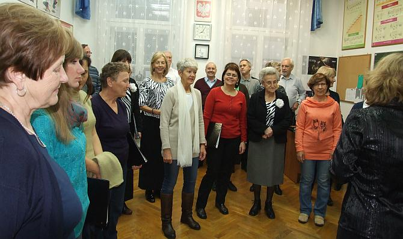
Wyjeżdżamy na konkurs. Przed konkursem kilka uwag, chwila skupienia i możemy wchodzić.
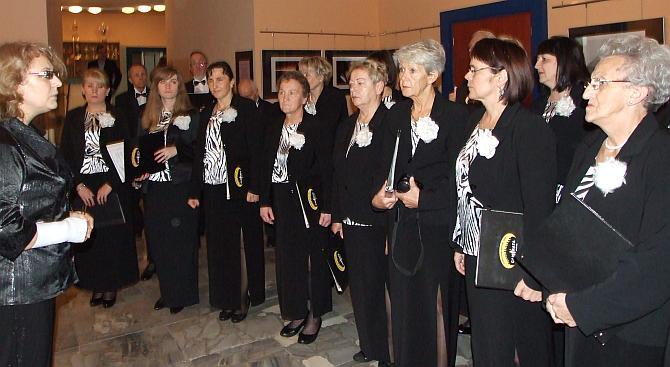
Akompaniuje nam dzisiaj Maria Rydzewska.
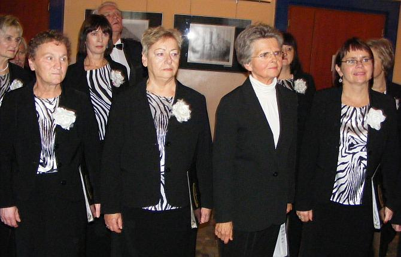
Tak się prezentujemy podczas konkursu!!!
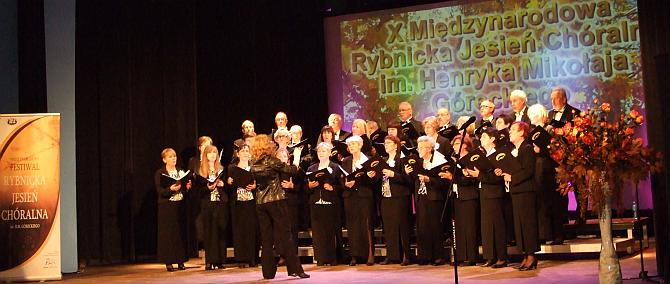 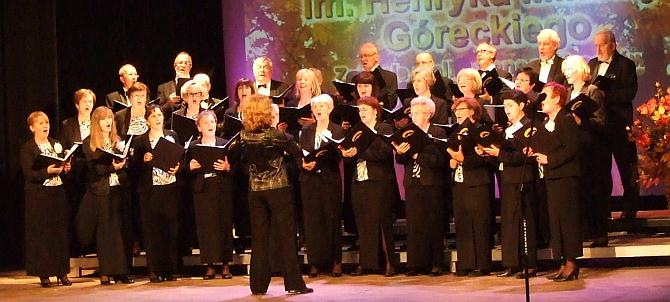
A tak było po konkursie !!!
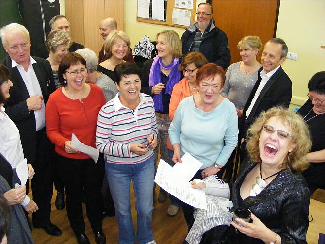
Teraz idziemy na zasłużony posiłek
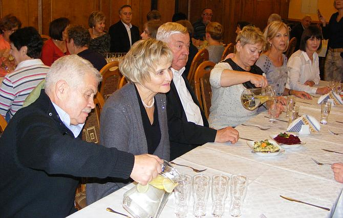 
i pozwiedzać Rybnik, żeby wypełnić czas oczekiwania na werdykt jurorów.
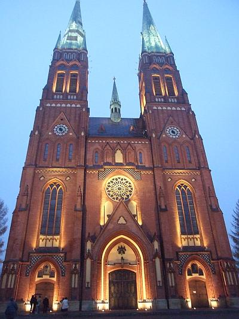
PROTOKÓŁ Z POSIEDZENIA JURYX Międzynarodowej Rybnickiej Jesieni Chóralnej imienia H.M.Góreckiego
Jury w składzie:
- dr Milan Kolena – Akademia Sztuk w Bratysławie - przewodniczący
- prof. zw. Benedykt Błoński – Uniwersytet Warmińsko-Mazurski w Olsztynie
- prof. Aleksandra Paszek-Trefon – Akademia Muzyczna im. K. Szymanowskiego w Katowicach
po przesłuchaniu 12 chórów, w dniu 08.11.2014 przyznało nagrodę w kategorii chórów mieszanych:
Brązowy Dyplom:
- STOWARZYSZENIE MUZYCZNE – CHÓR CAMERATA Z WIELICZKI, dyr.Izabela Szota.
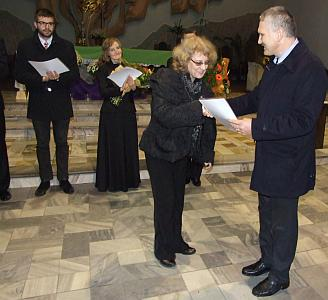 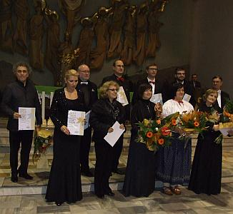
Wszyscy nagrodzeni zaprezentowali się podczas koncertu laureatów w sobotni wieczór, w Kościele pw. Królowej Apostołów w Rybniku.Zaczynamy od wspólnego zaśpiewania pieśni „Gaude Mater Polonia”.
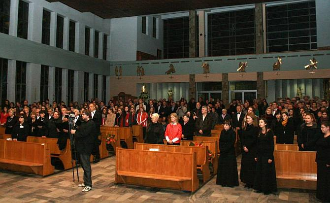
Na str. internetowej Rybnika czytamy: Odbyła się jubileuszowa X edycja Międzynarodowego Festiwalu Rybnicka Jesień Chóralna im. Henryka Mikołaja Góreckiego. To festiwal, którego celem jest szeroko rozumiana promocja muzyki chóralnej oraz propagowanie najlepszych wzorców amatorskiego śpiewactwa chóralnego. W tym roku festiwal gościł w Domu Kultury Chwałowice, w kościele pw. Matki Boskiej Bolesnej w Rybniku, w kościele pw. Królowej Apostołów w Rybniku oraz w Rybnickim Centrum Kultury. Do udziału w festiwalu komisja artystyczna zakwalifikowała 14 zespołów chóralnych. Jak podkreślają organizatorzy poziom tegorocznych prezentacji był bardzo wysoki.

© Stowarzyszenie Muzyczne Chór Camerata Wieliczka
Projekt i wykonanie:  Prowadzenie strony: Małgorzata Wysocka-Cebula
Prowadzenie strony: Małgorzata Wysocka-Cebula